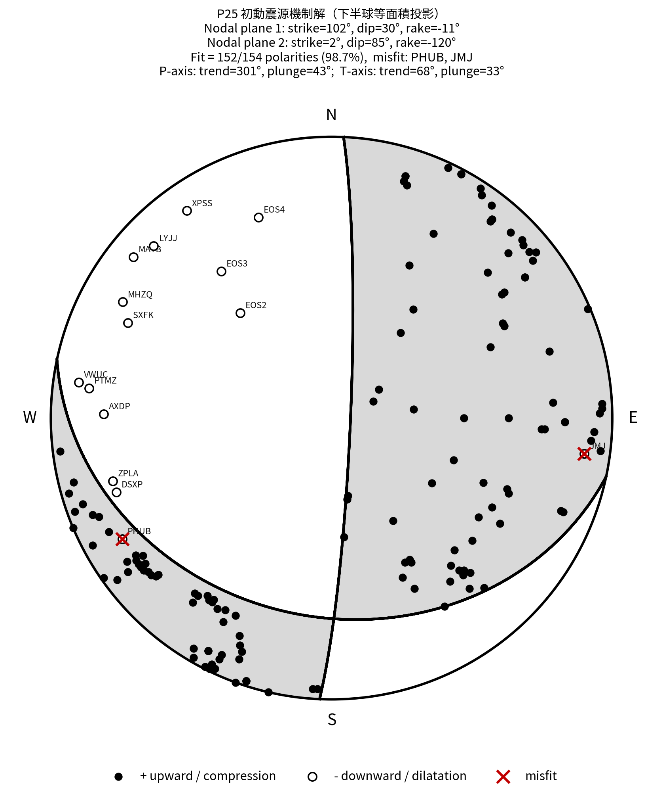
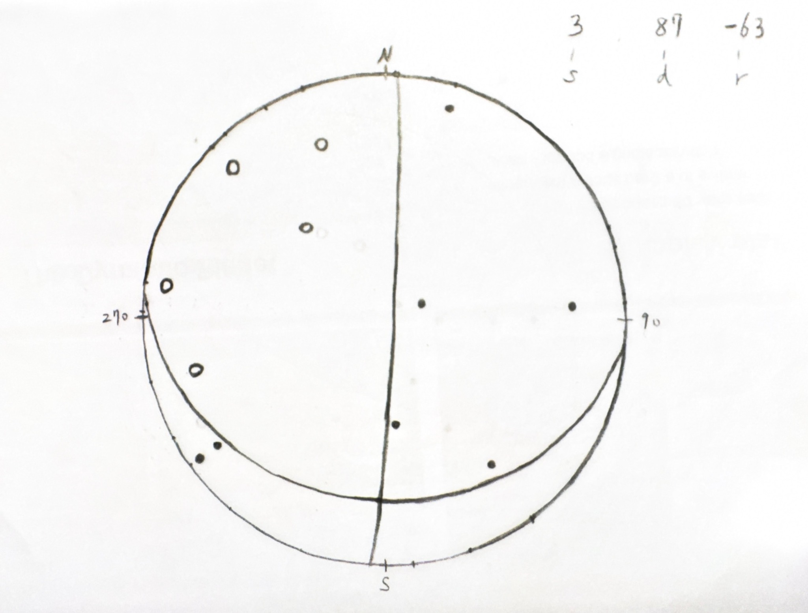

先整理資料
只留下三個欄位：方位角 azimuth、take-off angle、初動 polarity。沒有 + / − 的測站先不要放進反演，避免混淆判讀。
Earthquake Focal Mechanism · Lower Hemisphere Projection
這個網頁把地震學作業變成互動式 Demo：先整理測站資料，再修正 take-off angle，最後用 P 波初動的黑白分布推敲節面與震源機制球。
Manual drawing workflow
只留下三個欄位：方位角 azimuth、take-off angle、初動 polarity。沒有 + / − 的測站先不要放進反演，避免混淆判讀。
若 take-off angle 大於 90°，代表射線落在另一半球。手繪時要轉到下半球：
takeoff' = 180° - takeoff
azimuth' = azimuth - 180°
再把 azimuth' 調回 0°–360°把 + 畫成實心點、− 畫成空心點，尋找能把兩種初動分區的兩條大圓；黑白交界就是節面，一條是真斷層面，另一條是輔助面。
Take-off correction trainer
拖動 azimuth 與 take-off angle，觀察右方點位如何修正。這一段是手繪最容易錯的地方。
P25 dataset demo
載入範例資料後，網頁會自動整理測站、修正 take-off angle、畫出下半球投影，並可用滑桿或自動搜尋找出最符合初動分布的 strike / dip / rake。
黑點：+ upward；白點：− downward。紅叉代表目前模型無法解釋的初動。
載入資料後會顯示判讀結果。
—
超過 90° 的 take-off angle 會自動轉成下半球可繪製值。
| Station | Distance | Azimuth | Take-off | Polarity | Corrected Az. | Corrected Take-off | 修正 | Pred. |
|---|
Interactive mini game
這個遊戲改寫自你附件中的 Python 互動小遊戲：系統會用 seed 產生不同斷層型態，先只給你黑白初動點，讓你猜是哪一類震源機制。
先不要開答案，試著用初動點分布想像兩條節面。
Seismology principle
下面的動畫用「單一測站 → 多個測站 → 黑白分區 → 節面」的順序，把 P 波初動為什麼能推敲震源機制球講清楚。
Animated explanation
P 波初動記錄的是第一個到達測站的振動方向，因此每一站都提供震源球上一個方向的壓縮或擴張資訊。
每個測站提供震源球上一個方向的 P 波初動。azimuth 決定方位，take-off angle 決定離中心或外圈多遠，+ / − 決定該方向屬於壓縮或擴張象限。當許多測站疊在同一顆球上，就會形成黑白區塊。
雙偶震源的 P 波輻射型態會分成四個象限。黑白交界代表振幅接近零的位置，也就是兩條節面。這兩條節面中，一條是真正破裂的斷層面，另一條是輔助面，單靠 P 波初動通常無法唯一判定哪一條才是真斷層面。
震源機制球通常畫下半球，因為它能把震源向外發射到各測站的射線方向投影到平面上。等面積投影能保留面積比例，適合比較測站分布是否集中或偏向某些方位。
手繪時靠眼睛找能分開 + 與 − 的節面；程式則讓 strike、dip、rake 不斷改變，計算每組參數預測的 + / − 是否符合觀測，最後選出 fit 最高的機制解。
Reference output
左圖是程式依 P25 資料繪製出的參考震源機制；右圖是你手繪的此地震震源機制，網頁中特別附註為「手繪震源機制解」，可用來對照互動搜尋結果與人工判讀差異。

